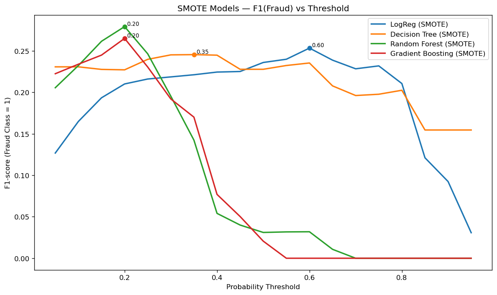
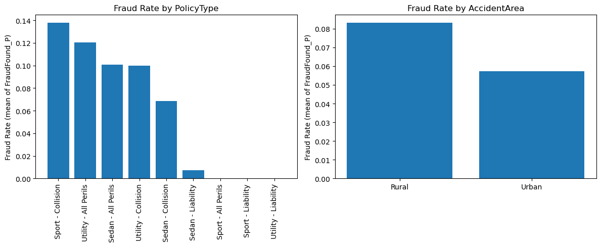
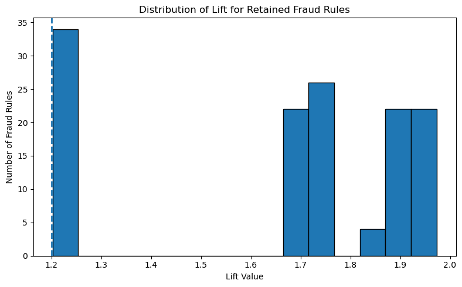

Insurance fraud: a prediction you can explain
Fraud is 5.99% of these claims, which makes accuracy actively misleading. This project reports the metrics that survive that imbalance — and pairs every prediction with human-readable rules mined from the same data.
| Term | Stands for | What it is |
|---|---|---|
| ROC-AUC | Receiver Operating Characteristic – Area Under Curve | How well the model separates the two classes across every threshold. 0.5 is a coin flip, 1.0 is perfect |
| PR-AUC | Precision-Recall Area Under Curve | The better measure when the positive class is rare — it ignores the easy majority entirely |
| SMOTE | Synthetic Minority Over-sampling Technique | Manufactures new minority-class rows by interpolating between real ones. It did not help here |
| FP-Growth | Frequent Pattern Growth | An algorithm that finds item combinations occurring together often, without generating every candidate first |
| Precision | — | Of everything flagged as fraud, how much really was |
| Recall | — | Of all the real fraud, how much got flagged |
| Lift | — | How much more often a rule holds than chance would predict. A lift near 1.0 means the rule says nothing |
| Decision threshold | — | The probability above which a prediction is called fraud. Left at 0.5 by default — which is wrong when 6% of rows are positive |
| Base rate | — | How common the positive class is to begin with. Here 5.99% |
Why accuracy is the wrong headline
A model that predicts “not fraud” for every single claim in this dataset scores 94% accuracy. It is also completely worthless. So the project never leads with accuracy: models were selected on F1 for the fraud class, and every model got its own tuned decision threshold rather than the default 0.5.

That chart is the methodological centre of the project. The threshold is not a hyperparameter you can leave at its default when the classes are this skewed — it changes which model looks best.
| Model | Thr. | ROC-AUC | PR-AUC | Precision | Recall | F1 | Accuracy |
|---|---|---|---|---|---|---|---|
| Gradient boosting | 0.150 | 0.891 | 0.354 | 0.296 | 0.486 | 0.368 | 0.900 |
| Random forest | 0.350 | 0.875 | 0.302 | 0.272 | 0.562 | 0.367 | 0.884 |
| Logistic regression | 0.650 | 0.800 | 0.152 | 0.148 | 0.595 | 0.237 | 0.770 |
| Decision tree | 0.750 | 0.649 | 0.198 | 0.196 | 0.384 | 0.260 | 0.869 |
Precision and recall are for the fraud class, on 185 fraud cases in a 3,084-row test set. Logistic regression is the trap in that table — it has the highest recall of the four at 0.595, which looks like the best fraud-catcher until you read across: precision 0.148 and PR-AUC 0.152 mean it is flagging almost everything, and its accuracy drops to 0.770 as a result. Gradient boosting catches fewer frauds and is still the better model.
Fraud-class precision is 0.296 — roughly two false positives for every genuine catch — at 0.486 recall. In practice that means the model is a triage tool that hands an investigator a shortlist, not an adjudicator that denies claims. On a base rate of 5.99% it is still a real lift over random selection, but presenting 0.900 accuracy as the result would be dishonest, and the report flags it as a class-imbalance artefact.
A negative result, kept in
SMOTE was the obvious move: oversample the minority class from 738 to 11,598 training examples and retrain. It made things worse in the way that matters.
| Configuration | ROC-AUC | PR-AUC | Accuracy |
|---|---|---|---|
| Best model, no SMOTE | 0.891 | 0.354 | 0.900 |
| Best model with SMOTE | 0.826 | 0.195 | 0.827 |

SMOTE was dropped, and the reason is documented rather than the experiment being quietly deleted. Reporting the thing that did not work is most of what makes the thing that did work believable.
Explainability as a first-class output
An investigator will not act on a probability score alone; they need to know what pattern the claim matches. So alongside the classifier, the same data was mined for association rules with FP-Growth — and then aggressively filtered:
| Stage | Count |
|---|---|
| Frequent itemsets generated | 7,411 |
| Fraud-related itemsets retained | 332 |
| Rules generated | 285,919 |
| Rules with fraud as the consequent | 331 |
| Strong fraud rules after filtering | 130 |
285,919 down to 130. Rule mining is trivially easy to do badly — leave the thresholds loose and you get a plausible-sounding rule for absolutely anything. The filtering funnel is the work.


Shipped, not just notebooked
The four notebooks (EDA, preprocessing, modelling, rule mining) persist their outputs — best_model.pkl, best_threshold.pkl, fraud_rules_all.csv — as artefacts. A multi-page Streamlit app loads them: one page scores a claim, another lets you explore the retained rules interactively. The threshold travels with the model, which matters, because a model saved without its tuned threshold silently reverts to 0.5 and loses most of its value.
Limitations
- Single public dataset, one insurer, one time period. Fraud patterns shift; there is no temporal validation here.
- Association rules describe co-occurrence, not causation, and none of the 130 should be read as a rule of adjudication.
- 0.296 precision means a human investigator is mandatory. This is decision support, not a decision.
- No cost-sensitive evaluation. The right threshold depends on the ratio between an investigation's cost and a missed fraud's cost, and we did not have those figures.